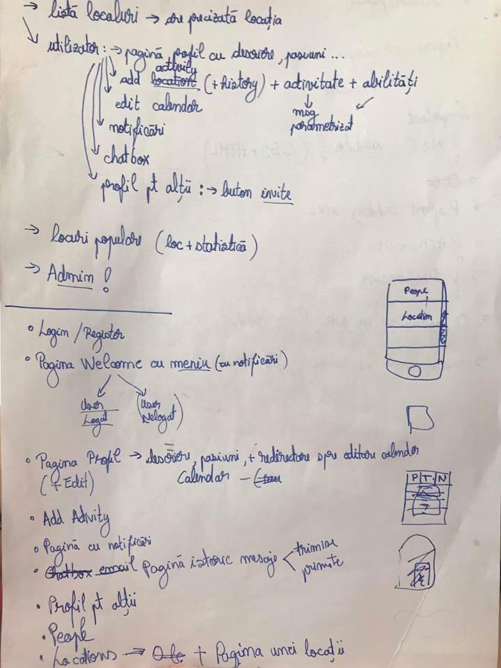

Raportul de fata surprinde detaliile care au vizat progresul interfeței proiectului "METOO",
propus in cadrul laboratorului de Dezvoltarea aplicaţiilor Web la nivel de client. Sunt surprinse in prezentul raport detalii legate
de obiectivele proiectului si etapele realizarii acestor obictive, cat si date legate de folosirea Github.
2. Introducere:
METOO se adreseaza persoanele care studiază/lucrează în localuri comune disponibile
într-un areal geografic: biblioteci, cafenele sau spaţii de co-working. Aplicația încurajeaza
interacțiunea dintre aceste persoane, pentru a putea studia/lucra împreuna. Istoria a dovedit că oamenii sunt capabili de lucruri
mărețe doar dacă colaborează, sau după cum spune Chuck Page, “o frunză ce lucrează de una singură nu face umbră’’.
3. Obiective:
Sa se dezvolte o aplicație Web ce realizeaza managementul informatiilor privitoare la locațiile în care se învață,
persoanele implicate, activitățile acestora, etc.
Fiecare utilizator, odată ajuns în localul în care va studia, va anunţa public ce activitate efectuează
printr-un mesaj parametrizat, în care va preciza ce tehnologii foloseste ("implementez [software] folosind
pentru front-end [bibliotecă] şi ca back-end [platforma] pentru [limbajul de programare]" sau
"studiez [concept|tehnologie]") și abilitățile sale ("pentru
[programare] ştiu ca [expert|novice] [limbaj|paradigmă|framework], iar pentru [design] am lucrat cu
[software]").
Toţi utilizatorii interesaţi de aceste tehnologii/abilităţi vor primi automat o notificare aferentă.
Sistemul va oferi suport pentru realizarea de conversaţii (a)sincrone și invitaţii de întâlnire "la o cafea".
De asemenea, utilizatorii vor putea vizualiza într-o manieră atractivă care sunt cele mai populare locuri din oraş şi ce tipuri de persoane le frecventează.
4. Etape intermediare ale designul general:
Setarea Obiectivelor.
Odată ce cunoaștem obiectivele site-ului, putem defini structura proiectului. Ce pagini și caracteristici va avea aplicația
pentru a îndeplini obiectivele, precum și cronologia pentru a construi aceste pagini.

Avînd structura proiectului, vom crea un ghid vizual cu wireframe.
Un wireframe este un schelet, un concept grafic, al unei pagini din aplicație.
Conține doar informații referitoare la structură, conținut, aranjare în pagină, puncte cheie de interes.
Wireframe-ul aplicației
Crearea de conținut (html): Acum, când avem o imagine mai amănunțită a site-ului, putem începe să creăm conținut pentru
paginile individuale.
Elemente vizuale (css): Cu arhitectura site-ului și un anumit conținut, putem începe să lucrăm la prezentare
(stil, layout, etc.).
Integrarea paginilor si asigurarea că acestea sunt omogene.
Testarea si Corectarea.
5. Maniera de interacţiune cu utilizatorul:
Utilizatorul va fi întampinat, la deschiderea aplicației, de o pagina unde va putea alege să se logeze,
dacă are deja cont, sau sign up, dacă nu are cont. Aceste procese se vor face prin intermediul unei rețele de socializare.
După logare/sing up va fi redirecționat spre pagina "Home". În cadrul acestei pagini utilizatorul poate accesa urmatoarele pagini:
"Profile", "Activity", "Locations", "Messages", "Discover People", "Notifications"
În cadrul paginii "Profile", utilizatorul își poate vizualiza detaliile profilului sau să le editeze.
În cadrul paginii "Activity", se poate adauga sau vizualiza o activitate, ce include: locația, tipul activitații, tehnologiile folosite si abilitățile.
În cadrul paginii "Locations", vor fi afișate într-o manieră atractivă locațiile existente, sau căutate de catre utilizator prin
intermediul search bar-ului și ultimele trei locații în care a avut ultilizatorul activități.
În cadrul paginii "Messages", utilizatorul poate vizualiza mesajele primite sau trimise și să trimită un nou mesaj.
În cadrul paginii "Discover People", se poate căuta si vizualiza profilul altor utilizatori.
În cadrul paginii "Notifications", va primi înștiințari: despre activitățile ce folosesc tehnologii de care este
utilizatorul interesat, despre un nou mesaj primit, sau invitație la cafea.
6. Modul de lucru cu Github
Sistemul de management al codului-sursă ales este Github iar pentru a facilita
lucrul cu acesta, am folosit Github Desktop.
A fost necesara descarcarea aplicatiei, autentificarea cu contul de git
,crearea unui repository pentru proiect si clonarea proiectului.
Modificarile facute in directorul proiectului sunt vizibile si pot si pot
fi adaugate proiectului prin succesiunea de comenzi "commit" si "push origin"
care pot fi realizate prin simpla apasare a unor butoane din aplicatia Github Desktop.
Pentru a prelua local schimbarile facute de ceilalti contribuitori se aplica, la fel de simplu, comenzile
"fetch origin" si "pull origin". Commit-urile au fost adaugate ("merge") branch-ului master.
7. Concluzie
Prin urmarirea atingerii obiectivelor si parcurgând etapele menționate, interfeţa Web a fost finalizată cu succes.